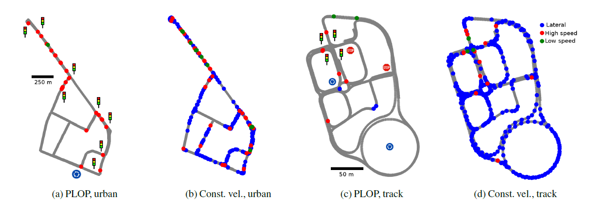

PLOP: Probabilistic poLynomial Objects trajectory Prediction for autonomous driving
Thibault Buhet Emilie Wirbel Andrei Bursuc Xavier Perrotton
CoRL 2020
Abstract
To navigate safely in urban environments, an autonomous vehicle (*ego vehicle*) must understand and anticipate its surroundings, in particular the behavior and intents of other road users (*neighbors*). Most of the times, multiple decision choices are acceptable for all road users (e.g., turn right or left, or different ways of avoiding an obstacle), leading to a highly uncertain and multi-modal decision space. We focus here on predicting multiple feasible future trajectories for both ego vehicle and neighbors through a probabilistic framework. We rely on a conditional imitation learning algorithm, conditioned by a navigation command for the ego vehicle (e.g., *turn right*). Our model processes ego vehicle front-facing camera images and bird-eye view grid, computed from Lidar point clouds, with detections of past and present objects, in order to generate multiple trajectories for both ego vehicle and its neighbors. Our approach is computationally efficient and relies only on on-board sensors. We evaluate our method offline on the publicly available dataset nuScenes, achieving state-of-the-art performance, investigate the impact of our architecture choices on online simulated experiments and show preliminary insights for real vehicle control.
Results

Video
BibTeX
@article{buhet2020plop,
title={PLOP: Probabilistic poLynomial Objects trajectory Planning for autonomous driving},
author={Buhet, Thibault and Wirbel, Emilie and Bursuc, Andrei and Perrotton, Xavier},
journal={Conference on Robot Learning (CoRL)},
year={2020}
}
References
- Rhinehart, N., McAllister, R., Kitani, K., & Levine, S. (2019). Precog: Prediction conditioned on goals in visual multi-agent settings. Iccv.